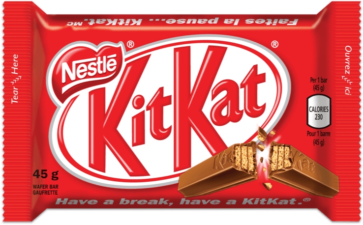

Kit Kat: The Ultimate Break-time Delight

If there's one candy that has the perfect balance of crispy wafer and smooth milk chocolate, it's got to be Kit Kat. This iconic chocolate bar has been my go-to treat for as long as I can remember, and every break feels incomplete without the satisfying snap of a Kit Kat.
The Irresistible Layers:
What makes Kit Kat so special is its unique composition of layers. The light and crispy wafer, carefully enrobed in a layer of velvety milk chocolate, creates a texture that is simply irresistible. Each bite is a harmonious blend of crunch and creaminess, making it a delightful experience for the taste buds.
Iconic Breakable Bars
The distinctive feature of Kit Kat is its breakable bars. The chocolate is molded into individual fingers, allowing you to snap off a piece to share with a friend or savor the segments one at a time. The act of breaking a Kit Kat has become a ritual, almost like a small celebration in the middle of a hectic day.
Fun Facts about Kit Kat
Kit Kat is produced by Nestlé globally, except in the United States where it's made by The Hershey Company.
The name "Kit Kat" originated from the Kit-Cat Club, an 18th-century Whig literary club in London.
Over 200 flavors of Kit Kat have been created worldwide, ranging from green tea in Japan to tiramisu in Europe.
Eye-Popping Imagery
The visual appeal of Kit Kat is undeniable. The iconic red and white packaging stands out on store shelves, and the neatly arranged fingers inside promise a treat that's both indulgent and shareable. Whether it's a classic four-finger bar or a chunky Kit Kat Chunky, the sight of Kit Kat is enough to make any candy lover smile.

Nutritional Information
While we all know that candy should be enjoyed in moderation, it's interesting to note that Kit Kat is not just about its delightful taste. It also provides a quick source of energy, thanks to the carbohydrates in the wafer, making it a sweet pick-me-up during a busy day.
In conclusion, Kit Kat is more than just a candy ; it's a moment of joy, a source of comfort, and the perfect companion for a quick break. Its timeless appeal, delicious taste, and the joy of sharing make Kit Kat my all-time favorite candy. Break me off a piece of that Kit Kat, and I'm a happy camper!